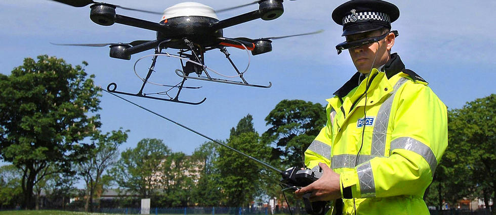

JAK LATAĆ ZGODNIE Z PRAWEM?
Przepisy prawne

Absolutnym minimum jest to byście zapoznali się z poniższymi stronami: http://www.ulc.gov.pl/pl/drony oraz http://www.pansa.pl/
Polska ma bardzo fajne przepisy na tle innych krajów. Pamiętaj, że jeśli jedziesz na urlop i chciałbyś/chciałabyś nagrać dronem fajny filmik to musisz się stosować do prawa kraju, w którym przebywasz. Tutaj przydatna lista uaktualniana przez ULC.
Jeśli chodzi o prawo w Polsce to latając dronami podlegasz przede wszystkim (ale nie tylko) pod przepisy ustawy z 3 lipca 2002 r. prawo lotnicze (tutaj).
Można zastosować także przepisy innych ustaw, np. kodeksu karnego jeżeli przy użyciu drona dojdzie do popełnienia przestępstwa. Dlatego zwracaj uwagę na to w jaki sposób korzystasz z drona i czy nie naruszasz prawa.
Jeśli natomiast chcesz mieć świadectwo kwalifikacji to dodatkowo zapoznaj się z rozporządzeniem z 3 czerwca 2013 r. w sprawie świadectw kwalifikacji.
Jeżeli chcesz wykorzystywać drona powyżej 25kg to już niezbędne będzie przeczytanie rozporządzenia z 26 kwietnia 2013 r. w sprawie przepisów technicznych i eksploatacyjnych dotyczących statków powietrznych kategorii specjalnej, nieobjętych nadzorem Europejskiej Agencji Bezpieczeństwa Lotniczego.
Trwają obecnie w Unii Europejskiej prace prowadzone pod egidą EASA (tutaj możesz poczytać więcej) by prawo dotyczące bezzałogowych statków powietrznych było jednolite w Unii. Chodzi o rozporządzenie w sprawie szczegółowego sposobu i warunków wykonywania lotów przez bezzałogowe statki powietrzne w polskiej przestrzeni powietrznej oraz procedur współpracy operatorów tych statków z instytucjami zapewniającymi służby ruchu lotniczego.
Na poziomie Polski także prowadzone są równolegle prace nad zmianą krajowych przepisów. „Planowane są zmiany w przepisach dotyczących lotów poza zasięgiem wzroku – BVLOS. Obecna propozycja unijna koncentruje się na lotach z widocznością BSP, natomiast polskie przepisy będą o krok przed propozycją EASA. Zmiany dotkną także lotów na bardzo małej wysokości – operacji automatycznych (np. loty patrolowe nad zakładami przemysłowymi) i agrolotniczych. Urząd bierze pod wagę realne zapotrzebowanie rynku i reaguje dostosowując przepisy do dynamicznie zmieniającego się świata bezzałogowych statków powietrznych. Nasze regulacje krajowe są jednymi z najlepiej ocenianych przez władze lotnicze innych państw oraz użytkowników bezzałogowców w Polsce – mówi Karina Lisowska, rzecznik prasy Urzędu Lotnictwa Cywilnego.
Kary

Zgodnie z art. 212 ust. 1 lit. a prawa lotniczego kto wykonując lot przy użyciu statku powietrznego, narusza przepisy dotyczące ruchu lotniczego obowiązujące w obszarze, w którym lot się odbywa, podlega karze pozbawienia wolności do lat pięciu.
Innymi słowy jeśli nie masz świadectwa kwalifikacji, a powinieneś mieć albo np. latasz w strefie bez odpowiedniej zgody to za sam fakt wykonania lotu ciąży odpowiedzialność karna.
Jako ciekawostkę dodam, że kara za latanie dronem z podłączoną kamerą (nawet wyłączoną) wynosi 20 000 AED, czyli nieco ponad 20 000 złotych!
Gdzie latać?
Przyda Ci się polska aplikacja Dron radar.
Pamiętaj! Loty w strefach kontrolowanych lotnisk (CTR) muszą odbywać się przy zachowaniu odpowiednich odległości i parametrów (w filmiku więcej). Przydany opis pozostałych stref znajdziesz tutaj.